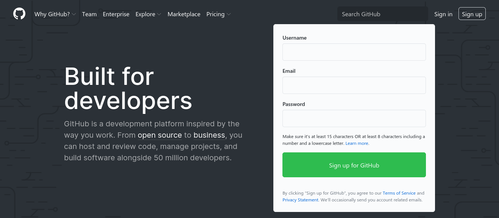

Git 101
What is Version Control?
Your Job
Your Daily Tasks
- Create things
- Save things
- Edit things
- Save the thing again
Version Control Systems
Version control systems (VCS) are a category of software tools that help a software team manage changes to source code over time.A Version control system is a very wise thing to use.
It lets you easily recover whenever you screw things up or lose files.
- revert selected files to a previous state,
- compare changes over time,
- see who last modified something, or
- determine when an issue was introduced.
There are a few different types of VCS
- Local Version Control Systems (LVCS)
- Centralized Version Control Systems (CVCS)
- Distributed Version Control Systems (DVCS)
Local Version Control System

Centralized Version Control System

In a DVCS, clients don't just check out the latest snapshot of the files.
Every user has a full copy of the repository, including its history.

Git Setup
Install Git
-
Linux (Debian/Ubuntu)
apt install git
- Windows
Create GitHub Account
https://github.com/join Git Basics
How does Git work?
Can be complicated at first but there are some key concepts.
Important Git terminology on following slides is orange.
Snapshot
- The way Git keeps track of your code history
- Records what all your files look like at any given point in time.
- You decide when to take a snapshot and of which files.
- You can go back to visit any snapshot.
Commit
- The act of creating a snapshot.
-
Can be a noun or a verb:
- "I commited code"
- "I just made a new commit"
- A project is made up of a bunch of commits.
Commit
Commits contain three pieces of information:
- Information about how the files changed from their previous state.
-
A reference to the commit that came
before it.
- Called the parent commit
-
A hash code name.
-
Will look something like
fad5759c5319ef79694cdf7c04b772731470329b
-
Will look something like
Repository
- Often shortend to repo.
-
A collection of all the files and their history.
- Consists of all commits.
- It's where all your hard work is stored.
Repository
- Can live on a local machine and/or on a remote server (e.g. GitHub).
- The act of copying a repository from a remote server is called cloning.
- Cloning from a remote server allows teams to work together.
Repository
- The process of downloading commits that don't exist on your machine from a remote repository is called pulling changes.
- The process of uploading your local commits to the remote repository is called pushing changes.
Branch
- All commits in Git live on some branch.
- There can be many, many branches in a repository.
-
The main branch in a project is called the
mastermain branch.
HEAD is a reference to the most recent commit (in most cases)
File States
Each file known to a Git repository is in one of three states:- Commited files are safely stored in the database.
- Modified files have been changed but are not yet stored in the database.
- Staged files are modified files that have been marked for inclusion in the next commit.
Basic Workflow
- You modify files in your working tree.
- You selectively stage those changes you want to be part of the next commit.
- You commit those changes, storing them safely in the local database.
Basic Workflow

Git Commands
git init
- Initializes a new repository in the current directory.
-
Creates the
.gitdirectory that will store the history of your files. -
The repository starts out empty until you
addsome files.
git init
$ mkdir project
$ cd project
$ git init
Initialized empty Git repository in /home/perry/project/.git/
git clone
- Creates a full copy of an existing repository.
- Source repositories can be local or hosted remotely (e.g on GitHub).
git clone
$ git clone https://github.com/leachim6/hello-world
Cloning into 'hello-world'...
remote: Enumerating objects: 24, done.
remote: Counting objects: 100% (24/24), done.
remote: Compressing objects: 100% (19/19), done.
remote: Total 5254 (delta 8), reused 10 (delta 3), pack-reused 5230
Receiving objects: 100% (5254/5254), 2.62 MiB | 4.23 MiB/s, done.
Resolving deltas: 100% (2535/2535), done.
git status
- Shows you an overview of currently modified (or untracked) files.
- Shows you the current branch.
- Shows you if you're up to date with a remote repository.
git status
$ cd hello-world
$ git status
On branch main
Your branch is up to date with 'origin/main'.
nothing to commit, working tree clean
$ echo "Hello, World" > README
$ git status
On branch main
Your branch is up to date with 'origin/main'.
Untracked files:
(use "git add <file>..." to include in what will be committed)
README
nothing added to commit but untracked files present (use "git add" to track)
git add
- Begins tracking a new file and adds it to the staging area.
- Adds modifications of a known file to the staging area.
git add
$ git status
On branch main
Your branch is up to date with 'origin/main'.
Untracked files:
(use "git add <file>..." to include in what will be committed)
README
nothing added to commit but untracked files present (use "git add" to track)
$ git add README
$ git status
On branch main
Your branch is up to date with 'origin/main'.
Changes to be committed:
(use "git restore --staged <file>..." to unstage)
new file: README
git diff
- Shows changes of modified files not yet added to the staging area.
-
git diff --stagedshows only staged changes.
git diff
$ git diff
diff --git a/LICENSE b/LICENSE
index a6aff0a..ba5542e 100755
--- a/LICENSE
+++ b/LICENSE
@@ -1,6 +1,6 @@
MIT License
-Copyright (c) 2018 Mike Donaghy [leachim6]
+Copyright (c) 2020 Mike Donaghy [leachim6]
Permission is hereby granted, free of charge, to any person obtaining a copy
of this software and associated documentation files (the "Software"), to deal
git diff
$ git diff --staged
diff --git a/README b/README
new file mode 100644
index 0000000..3fa0d4b
--- /dev/null
+++ b/README
@@ -0,0 +1 @@
+Hello, World
git commit
- Adds all staged changes to a new commit and takes a new snapshot of the repository.
-
Needs a commit message that usually contains a
reason for the contained changes.
-
Can either be passed using the
-mcommand line flag or edited interactively.
-
Can either be passed using the
git commit
$ git status
On branch main
Your branch is up to date with 'origin/main'.
Changes to be committed:
(use "git restore --staged <file>..." to unstage)
new file: README
$ git commit -m "Add README with a short greeting"
[main ca3e8fa] Add README with a short greeting
1 file changed, 1 insertion(+)
create mode 100644 README
git rm
- Removes a file from the repository and the local filesystem.
-
Needs to be commited just like an added file.
- Its history is maintained and it can be restored if necessary.
git rm
$ git rm README
rm 'README'
$ git status
On branch main
Your branch is ahead of 'origin/main' by 1 commit.
(use "git push" to publish your local commits)
Changes to be committed:
(use "git restore --staged <file>..." to unstage)
deleted: README
$ git commit -m "There already is a README.md"
[main d388459] There already is a README.md
1 file changed, 1 deletion(-)
delete mode 100644 README
git log
- Shows a log of recent commits
-
Contains
- commit hash
- author
- date
- commit message
git log
$ git log
commit d388459de2cc6d5bd93c200bf5ce2bf07bed86c9 (HEAD -> main)
Author: Kevin Perry <perry@fhwn.ac.at>
Date: Thu Oct 22 19:57:38 2020 +0200
There already is a README.md
commit ca3e8faf765a345c62a932626b9408fc283ac4e2
Author: Kevin Perry <perry@fhwn.ac.at>
Date: Thu Oct 22 19:51:41 2020 +0200
Add README with a short greeting
commit e09c405e39c1518d91c8643d617e42c1d980a111 (origin/main, origin/HEAD)
Author: Ferhat Geçdoğan <54369961+ferhatgec@users.noreply.github.com>
Date: Mon Oct 19 22:28:47 2020 +0300
Fix FlaScript (#851)
git restore
- Lets you undo changes to modified files.
-
git restore --stagedlets you remove files from the staging area without undoing the modification.
git pull
- Lets you download changes from remote repositories and adds them to the local copy.
git pull
$ git status
On branch main
Your branch is behind 'origin/main' by 2 commits, and can be fast-forwarded.
(use "git pull" to update your local branch)
nothing to commit, working tree clean
$ git pull
Updating 73762dd..e09c405
Fast-forward
#/~Thai.ext | 2 ++
README.md | 1 +
f/flascript.fls | 6 +++---
3 files changed, 6 insertions(+), 3 deletions(-)
create mode 100644 #/~Thai.ext
git push
- Lets you upload changes from a local repository to a remote copy.
git push
$ git status
On branch main
Your branch is ahead of 'origin/main' by 2 commits.
(use "git push" to publish your local commits)
nothing to commit, working tree clean
$ git push
Counting objects: 3, done.
Delta compression using up to 4 threads.
Compressing objects: 100% (2/2), done.
Writing objects: 100% (3/3), 302 bytes | 302 KiB/s, done.
Total 3 (delta 0), reused 0 (delta 0)
To https://github.com/leachim6/hello-world.git
45cd8fc..8ac5de3 main -> main
.gitignore
The special file .gitignore can be used to hide files
and folders you do not want to track.
.gitignore
# Build results
Debug/
Release/
bin/
obj/
# Files built by Visual Studio
*.obj
*.pdb
# .NET Core
project.lock.json
project.fragment.lock.json
artifacts/